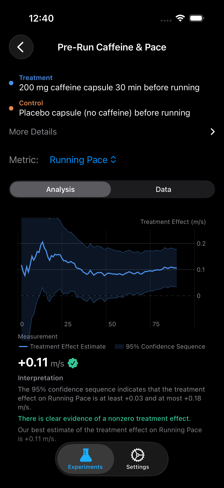

Does Caffeine Actually Make Me Run Faster?
The Question
Caffeine is the most widely consumed psychoactive substance on the planet, and by far the most studied ergogenic aid in sports science. Runners swear by their pre-run espresso. Supplement companies sell caffeinated gels, chews, and capsules with bold performance claims. The research literature is overwhelmingly positive at the population level.
But population-level evidence hides enormous individual variation. Genetic differences in caffeine metabolism (CYP1A2 polymorphisms) mean that the same 200 mg dose can be a turbocharger for one runner and a jittery, stomach-churning disaster for another. Your training history, habitual caffeine intake, body weight, and even your gut microbiome all modulate the response.
The only way to know whether caffeine makes you faster is to run a proper randomized experiment on yourself, with your Apple Watch recording every split.
What the Science Says
Southward et al. (2018) conducted a comprehensive meta-analysis of 46 studies and found that caffeine improves endurance performance by an average of 2-4%, with the most consistent effects at doses of 3-6 mg per kg of body weight [1]. For a 70 kg runner, that is 210-420 mg, roughly one to two strong coffees.
The mechanism is well understood. Caffeine is an adenosine receptor antagonist: it blocks the neurotransmitter that accumulates during wakefulness and makes you feel tired. In exercise, this translates to a reduced rating of perceived exertion (RPE), meaning the same pace feels easier [3]. You do not gain more muscle or more aerobic capacity. You simply tolerate discomfort better, which lets you push harder for longer.
Guest et al. (2021) published an International Society of Sports Nutrition position stand confirming caffeine's ergogenic effects across endurance, strength, and high-intensity exercise, while noting that habitual caffeine users may experience attenuated benefits [2]. This is precisely why self-experimentation matters: if you drink three cups of coffee a day, the marginal benefit of a pre-run capsule could be smaller than the literature suggests.
The optimal timing window is 30-60 minutes before exercise, when plasma caffeine concentrations peak. Capsule form provides more precise dosing than coffee, which varies wildly in caffeine content depending on brew method, bean, and serving size.
Experiment Design
| Treatment | 200 mg caffeine capsule, taken 30 min before running |
| Control | Placebo capsule (no caffeine), taken 30 min before running |
| Primary Metric | Running Pace (m/s) |
| Secondary Metrics | Workout Duration (min), Workout Calories (kcal) |
| Window | Workout start to workout end |
| Duration | 90 days |
| Unit Length | 1 day (daily randomization) |
| Washout | None (caffeine half-life ~5 hours, next-day carryover negligible) |
Why a placebo capsule matters. Unlike the magnesium experiment where the outcome (deep sleep) is measured unconsciously by your watch, running performance is partially influenced by psychology. If you know you took caffeine, you might push harder simply because you expect to feel faster. A placebo capsule controls for this expectation effect. Have someone else prepare identical-looking capsules, or use a blinding service, to ensure your experiment is rigorous.

Synthetic Results
We simulated 90 days of daily-randomized running data using effect sizes from the published literature and the design-based confidence sequence framework [4]. These results illustrate what a real experiment might show for a runner who genuinely responds to caffeine.
Day 90 Results (95% Confidence Sequence)
What This Means
All three metrics reached statistical significance by day 90. The primary finding: caffeine increased running pace by 0.12 m/s, a 4% improvement. To put that in concrete terms, if your baseline 5K pace is 25:00, a 4% improvement brings you to approximately 24:00. That is a meaningful jump, the kind of gain that normally takes weeks of structured training to achieve.
The secondary metrics tell a coherent story. Workout duration increased by 5 minutes, suggesting that caffeine extended the point at which fatigue forced a stop. Calorie expenditure increased by 40 kcal, a natural consequence of running longer and faster. All three results point in the same direction: caffeine genuinely enhanced this runner's performance.
Importantly, the confidence sequence is anytime-valid. If the pace effect had been obvious by day 20, you could have stopped the experiment early with full statistical certainty. No need to wait for an arbitrary "end date." If the effect were smaller or absent, the bounds would simply remain wide, telling you honestly that you do not yet have enough evidence.
Tips for Running This Experiment
- Use capsules, not coffee. A standard cup of drip coffee contains anywhere from 80 to 200 mg of caffeine depending on the brew. Capsules give you a precise, repeatable dose. Buy 200 mg caffeine capsules and identical-looking placebo capsules from a compounding pharmacy or supplement retailer.
- Run the same route. Pace is heavily influenced by terrain, elevation, wind, and temperature. Reducing route variability reduces noise. If you cannot run the same route every day, at least keep the route category consistent (flat road vs. hilly trail).
- Time your dose precisely. Caffeine peaks in plasma at 30-60 minutes post-ingestion. Set a timer. Taking it 5 minutes before you walk out the door wastes most of the ergogenic window.
- Avoid stacking stimulants. If you drink a morning coffee at 7 AM and run at 6 PM, residual caffeine is minimal. But if you drink coffee at 3 PM and run at 4 PM, the experimental caffeine is layered on top of dietary caffeine, confounding the result.
- Record non-run days too. If the app randomizes you to caffeine on a rest day, that is fine. The confidence sequence simply skips days without workout data. But do not skip running days because you "do not feel like it" after seeing your assignment, as that introduces selection bias.
References
- Southward K, et al. Caffeine ingestion and endurance performance: a meta-analysis. Sports Medicine, 2018;48(8):1913-1928.
- Guest NS, et al. International Society of Sports Nutrition position stand: caffeine and exercise performance. JISSN, 2021;18(1):1.
- Doherty M, Smith PM. Effects of caffeine ingestion on rating of perceived exertion during and after exercise. International Journal of Sport Nutrition and Exercise Metabolism, 2005;15(1):69-83.
- Ham D, Lindon M, Tingley D, Bojinov I. Design-Based Confidence Sequences. NeurIPS, 2023.
Find Out If Caffeine Works for You
Set up a rigorous pre-workout caffeine experiment in ABMe. Your Apple Watch tracks every run. The confidence sequence tells you when you have a real answer.
Download ABMe